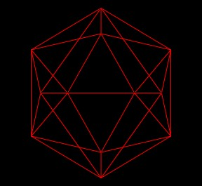
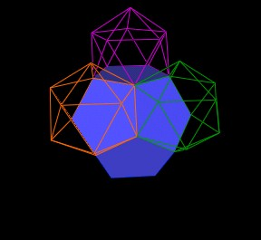

Consider the Icosahedron.
|  |
| Icosahedron |
If we remove one vertex (the "top" vertex) and the 5 edges that connect to this vertex, we find a pentagon.
| One vertex and 5 edges removed. |
We can fillin the pentagon to make it easier to see...
| A pentagon within the Icosahedron. |
| A pentagon within the Icosahedron. |
The Icosahedron has 12 vertices. So, within each Icosahedron, there are 12 such pentagons, one for each vertex.
|
One of 12 pentagons within the Icosahedron. |
The intersection of these 12 pentagons defines within the Icosahedron a regular Dodecahedron.
|
Regular Dodecahedron defined within Icosahedron. |
|
Regular Dodecahedron defined within Icosahedron. |
Next, consider the Dodecahedron scaled to be rather large compared to the Icosahedron. The Icosahedron is now completely within the Dodecahedron.
|
|
| Scaled up Dodecahedron. |
| Scaled up Dodecahedron. |
If we scale the Dodecahedron just right, we can use each of the 12 pentagon faces of the Dodecahedron as a pentagon within another, larger, Icosahedron.
| A larged Icosahedron is added. |
Note that this new, larger Icosahedron just fits the pentagon of the Dodecahedron and that the two Icosahedra shown (one small, one large) share a common vertex.
| Exact fit of new Icosahedron. |
What scaling is going on to make all these polyhedra fit just right?
We assign a scale of 1 to the original Icosahedron, and also to the regular Dodecahedron we discovered within the Icosahedron.
Then the larger dodecahedron is scaled by a factor of p^3 (the 3rd power of the Golden Ratio), which is approximately p^3 = 4.236067977....
The larger Icosahedron we just added which fits exactly with the original Icosahedron and the scaled Dodecahedron has a scale factor of p, the Golden Ratio.
As mentioned, we can add 12 such Icosahedra, one for each of the 12 faces of the regular Dodecahedron. But this would make things hard to see, so we are only going to add a couple new Icosahedra, as shown.
| Two new Icosahedra. |
|  |
| Three new Icosahedron. |
We have added these 3 new Icosahedron around one vertex of the Dodecahedron.

|
| 3 Icosahedra as solids. |
|
Each shares a vertex with the orginial Icosahedron. |
We find that the 3 new Icosahedra have 3 triangular faces all in the same plane. And that these 3 triangles define a larger triangle. In fact, if we were to add all of the 12 new Icosahedra, we would find that another, even larger, Icosahedron is defined.
| The next Icosahedron layer. |
| The next Icosahedron layer. |
| The next Icosahedron layer. |
This new Icosahedron (white) is scaled by a factor of p^3 from the orginal Icosahedron.
| The next Icosahedron layer. |
Note that the 3 solid shaded Icosahedra divide the edges of the outer (white) Icosahedron at 6 different points. We can connect these points together to define 2 different triangles.
| Skewed triangle. |
| Another skewed triangle. |
These are equilateral triangles. They are part of the 5 Jitterbugs which are defined with every Icosahedron. See the article "What's in this polyhedron?" for further details on the Jitterbug.
|
Icosahedron with 2 skewed triangles. Part of 5 Jitterbugs within Icosahedron. |
Now that we are back to a surrounding Icosahedron (the white Icosahedron), we can consider this Icosahedron as "the" center and continue to build out even larger layers of Icosahedra and Dodecahedra.
| Continuing to scale up. |
| Continuing to scale up. |
Although the Icosahedron does not "close pack" to fill all space, they do scale pack, with the regular Dodecahedron, to fill all space.
| Icosahedron layers. |
In this Icosahedron layering, the scale factors for the center and surrounding Icosahedra go as p^0 (center, red), p^3 (white), p^6 (yellow), etc. while the inner connecting Icosahedra between the Icosahedra layers go as p^1 (solid, green), p^4 (solid, blue), etc.
It may seem like there are missing Icosahedra in this layering scheme of scale factor p^2 and p^5, etc., but they are here.
Note that for any Icosahedron of scale factor p^n, there is defined within it a center Icosahedron of scale factor p^(n-3) and 12 "connecting" Icosahedron of scale factor p^(n-2).
So, consider the solid blue Icosahedron. It has a scale factor of p^4. This means that within this Icosahedron there is a "center" Icosahedron of scale factor p^1 and 12 connecting Icosahedra of scale factor p^2.
So we have found an Icosahedron of scale factor p^2. In a similar way, we can find an Icosahedron of any p^(integer) scale factor we want.
The scaling of the regular Dodecahedra go as p^0, p^3, p^6, etc. corresponding to the scaling of the layers of the Icosahedra of scale factors p^0, p^3, p^6, etc. Since we can find an Icosahedron of any p^n scale, we can also find a regular Dodecahedron of any p^n scale. (n and integer.)
Usage Note: My work is copyrighted. You may use my work but you may not include my work, or parts of it, in any for-profit project without my consent.